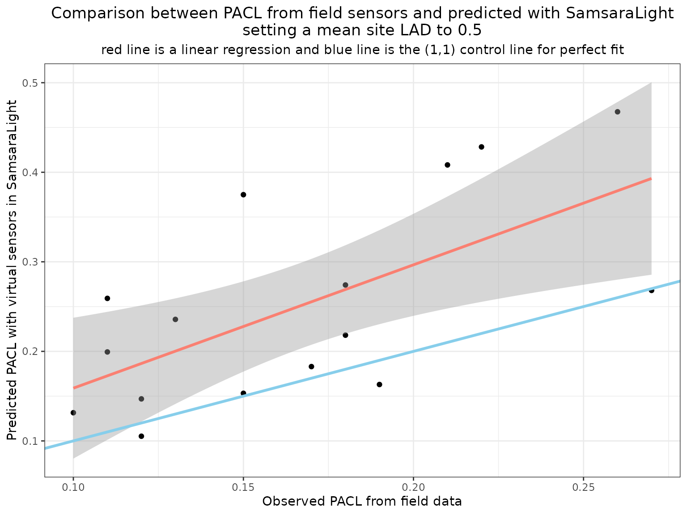
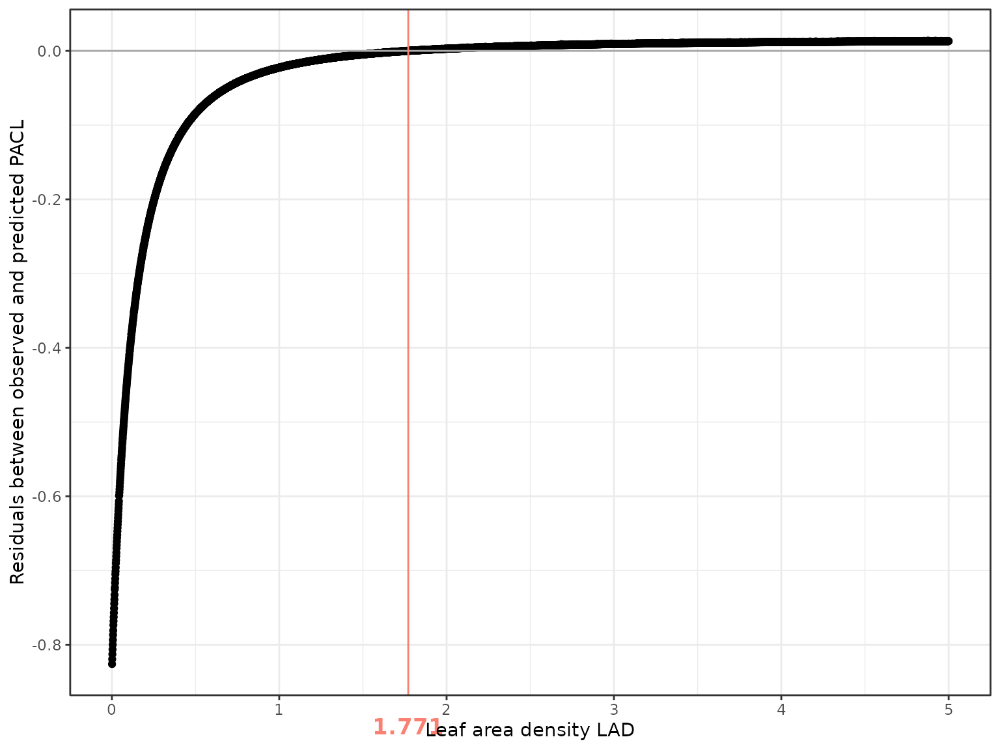
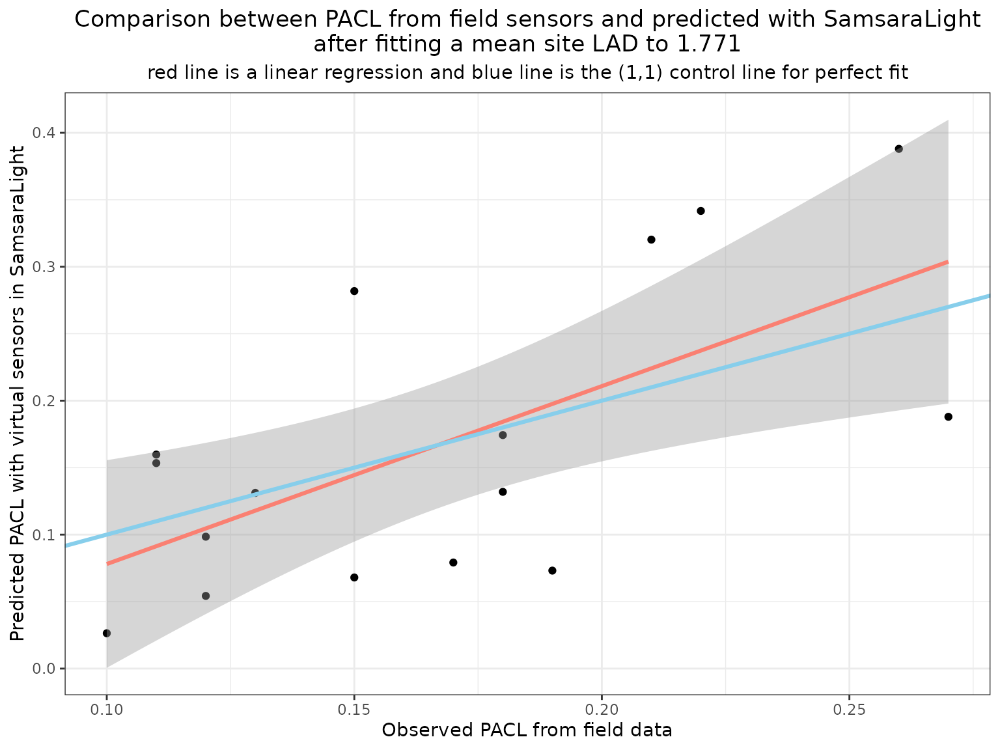

5 - Virtual sensors
Estimate light arriving towards a virtual sensor
5-virtual_sensors.RmdIntroduction
In the previous vignettes, we examined how light transmission depends on crown structure and on the choice of transmission model. In this tutorial, we focus on the use of virtual sensors to compare model outputs with field measurements.
Virtual sensors allow us to estimate the amount of radiation reaching specific locations in the stand, such as the forest floor. They can therefore be used to evaluate model performance and to support parameter calibration.
In this vignette, we first show how to define and use virtual sensors in SamsaRaLight. We then illustrate how sensor outputs can be compared with field measurements of percentage of above canopy light (PACL). Finally, we present a simple approach to calibrate a mean site leaf area density (LAD) using virtual sensors and discuss its limitations.
Estimating PACL with light sensors
Measuring light in the field
In forest ecosystems, light availability at the ground level can be measured using direct sensors (quantum sensors, dataloggers) or indirect methods such as hemispherical photography. These measurements provide estimates of transmitted radiation or PACL at specific locations. In SamsaRaLight, virtual sensors are designed to reproduce such measurements within simulated stands.
Defining sensors in a virtual stand
In the model, a sensor represents a point where incoming radiation is
recorded. Sensors are defined by their spatial coordinates and height
over the ground and are provided as a dedicated data.frame when creating
the stand. Measurements of PACL are not required as input data for the
model, only id_sensor, x, y and
h_m variables.
The following example shows the sensor configuration used in the
cloture20 dataset.
SamsaRaLight::data_cloture20$sensors
#> id_sensor x y h_m pacl pacl_direct pacl_diffuse
#> 1 1 22.00 56.64 2 0.11 0.13 0.10
#> 2 2 71.22 53.45 3 0.22 0.28 0.16
#> 3 3 75.30 53.45 3 0.26 0.31 0.21
#> 4 4 71.22 45.27 3 0.15 0.13 0.16
#> 5 5 71.22 37.21 3 0.13 0.08 0.17
#> 6 6 56.88 37.21 3 0.18 0.12 0.22
#> 7 7 68.11 24.30 2 0.27 0.29 0.24
#> 8 8 57.84 22.00 3 0.18 0.21 0.15
#> 9 9 57.84 26.11 3 0.10 0.12 0.09
#> 10 10 67.34 53.45 3 0.21 0.26 0.17
#> 11 11 22.00 64.82 3 0.17 0.20 0.15
#> 12 12 25.97 64.82 3 0.19 0.24 0.15
#> 13 13 25.97 68.74 3 0.12 0.09 0.14
#> 14 14 28.08 74.86 3 0.11 0.03 0.18
#> 15 15 32.00 68.74 3 0.12 0.07 0.17
#> 16 16 28.08 64.82 3 0.15 0.18 0.13An input sensors data.frame structure can be checked using the
function SamsaRaLight::check_sensors()
SamsaRaLight::check_sensors(SamsaRaLight::data_cloture20$sensors)
#> Sensors table successfully validated.Sensors are included in the stand definition using the
sensors argument of create_sl_stand().
stand_cloture <- SamsaRaLight::create_sl_stand(
# Tree inventory
trees_inv = SamsaRaLight::data_cloture20$trees,
core_polygon_df = SamsaRaLight::data_cloture20$core_polygon,
# STand geometry
cell_size = 5,
latitude = SamsaRaLight::data_cloture20$info$latitude,
slope = SamsaRaLight::data_cloture20$info$slope,
aspect = SamsaRaLight::data_cloture20$info$aspect,
north2x = SamsaRaLight::data_cloture20$info$north2x,
# Define sensors
sensors = SamsaRaLight::data_cloture20$sensors
)
#> SamsaRaLight stand successfully created.Once the stand is created, their presence can be checked by printing
or plotting the object. Sensors appear as red symbols in the graphical
outputs and can be hidden if needed (add_sensors = F
argument).
print(stand_cloture)
#> SamsaRaLight stand of 1 ha with 112 trees and 16 sensors (20 x 20 cells, 5 m)
plot(stand_cloture)
plot(stand_cloture, top_down = TRUE)
Obtaining sensor outputs
After defining the sensors, the model is run in the usual way. When
only sensor outputs are required, the argument
sensors_only = TRUE can be used to reduce computation time.
In this example, we compute the full output for illustration
purposes.
out_cloture <- SamsaRaLight::run_sl(
sl_stand = stand_cloture,
monthly_radiations = SamsaRaLight::data_cloture20$radiations,
detailed_output = TRUE,
sensors_only = FALSE
)
#> parallel mode disabled because OpenMP was not available
#> SamsaRaLight simulation was run successfully.Sensor-level results are stored following the same structure as cell
outputs and include total, direct, and diffuse components when
detailed_output = TRUE. Unlike cells, sensor energy is
computed on a horizontal plane, which makes it directly comparable with
most field measurements.
out_cloture$output$light$sensors
#> id_sensor e e_direct e_diffuse pacl pacl_direct pacl_diffuse
#> 1 1 975.1081 510.1363 464.9718 0.2591643 0.29688893 0.2274550
#> 2 2 1611.4963 804.1493 807.3470 0.4283036 0.46799849 0.3949382
#> 3 3 1759.1077 871.7554 887.3523 0.4675357 0.50734386 0.4340752
#> 4 4 1410.7648 507.5935 903.1713 0.3749531 0.29540906 0.4418135
#> 5 5 886.8343 274.9051 611.9292 0.2357029 0.15998915 0.2993437
#> 6 6 820.5048 233.5803 586.9245 0.2180738 0.13593897 0.2871119
#> 7 7 1008.6528 497.3537 511.2991 0.2680798 0.28944972 0.2501174
#> 8 8 1031.3834 503.4337 527.9497 0.2741211 0.29298815 0.2582625
#> 9 9 494.6449 264.6301 230.0148 0.1314668 0.15400933 0.1125187
#> 10 10 1535.8037 783.7565 752.0471 0.4081860 0.45613031 0.3678866
#> 11 11 688.5497 380.1607 308.3890 0.1830028 0.22124578 0.1508578
#> 12 12 613.2418 370.2564 242.9854 0.1629874 0.21548170 0.1188636
#> 13 13 395.9501 87.3357 308.6144 0.1052356 0.05082760 0.1509681
#> 14 14 750.0835 77.8084 672.2751 0.1993572 0.04528290 0.3288637
#> 15 15 552.8115 108.0624 444.7491 0.1469263 0.06289013 0.2175625
#> 16 16 576.2484 298.4584 277.7900 0.1531553 0.17369673 0.1358894
#> punobs punobs_direct punobs_diffuse
#> 1 0.50511599 0.5558141 0.44949340
#> 2 0.74092380 0.7344724 0.74734962
#> 3 0.79624286 0.7938869 0.79855741
#> 4 0.68922897 0.5168603 0.78610231
#> 5 0.45268226 0.1930122 0.56933727
#> 6 0.50222845 0.1452916 0.64427976
#> 7 0.64858646 0.6102180 0.68590843
#> 8 0.56474423 0.5614058 0.56792761
#> 9 0.03981054 0.0000000 0.08561223
#> 10 0.73312943 0.7265461 0.73999032
#> 11 0.23736469 0.2382935 0.23621971
#> 12 0.24727062 0.2622766 0.22440478
#> 13 0.39118184 0.3083699 0.41461704
#> 14 0.74583131 0.4494126 0.78013850
#> 15 0.61655965 0.4911163 0.64703911
#> 16 0.27703111 0.3106360 0.24092594Comparing observed and simulated PACL
We can now compare simulated PACL values with field measurements collected at the sensor locations. The following figure shows the relationship between observed and predicted PACL for an initial LAD value of 0.5. When predictions are systematically higher than observations, the model simulates too much transmitted light. This indicates that foliage density is underestimated and that LAD should be increased. Conversely, systematic underestimation would suggest excessive attenuation.
dplyr::left_join(
SamsaRaLight::data_cloture20$sensors %>%
dplyr::select(id_sensor, pacl) %>%
dplyr::rename_at(vars(-"id_sensor"), ~paste0(., "_obs")),
out_cloture$output$light$sensors %>%
dplyr::select(id_sensor, pacl) %>%
dplyr::rename_at(vars(-"id_sensor"), ~paste0(., "_pred")),
by = "id_sensor"
) %>%
dplyr::mutate(
diff_pacl = pacl_obs - pacl_pred
) %>%
ggplot(aes(y = pacl_pred, x = pacl_obs)) +
geom_point() +
geom_smooth(method = "lm", formula = y ~ x, color = "salmon", linewidth = 1.1) +
geom_abline(intercept = 0, slope = 1, color = "skyblue", linewidth = 1.1) +
xlab("Observed PACL from field data") +
ylab("Predicted PACL with virtual sensors in SamsaraLight") +
labs(title = "Comparison between PACL from field sensors and predicted with SamsaraLight\nsetting a mean site LAD to 0.5",
subtitle = "red line is a linear regression and blue line is the (1,1) control line for perfect fit") +
theme_bw() +
theme(plot.title = element_text(hjust = 0.5),
plot.subtitle = element_text(hjust = 0.5))
In this example, PACL is on average overestimated, suggesting that the default LAD value of 0.5 is slightly too low.
A first approach to LAD calibration using virtual sensors
Virtual sensors can be used to calibrate crown parameters by minimizing the discrepancy between observed and simulated light. Here, we illustrate a simple approach based on a grid search over LAD values.
Running a batch of simulations
We run a series of simulations in which all trees are assigned the same LAD value, spanning a wide range.
LADs <- seq(0.001, 5, by = 0.001)For each simulation, we: - Run the model using
sensors_only = TRUE to fasten drastically the computation
time, - Extract predicted PACL at sensor locations, - Compute the mean
residual between observed and predicted values.
out_residuals <- vector("list", length(LADs))
i <- 0
time_start <- Sys.time()
for (lad in LADs) {
print(lad)
i <- i+1
# Set the tested LAD value
tmp_stand <- stand_cloture
tmp_stand$trees <- tmp_stand$trees %>%
dplyr::mutate(crown_lad = lad)
# Run SamsaraLight
out_sensors_calib <- SamsaRaLight::run_sl(
sl_stand = tmp_stand,
monthly_rad = SamsaRaLight::data_cloture20$radiations,
parallel_mode = TRUE,
verbose = FALSE,
sensors_only = TRUE # Here important because we run lot of simulations
)
# Compute the mean residuals
out_residuals[[i]] <-
dplyr::left_join(
SamsaRaLight::data_cloture20$sensors %>%
dplyr::select(id_sensor, pacl) %>%
dplyr::rename_at(vars(-"id_sensor"), ~paste0(., "_obs")),
out_sensors_calib$output$light$sensors %>%
dplyr::select(id_sensor, pacl) %>%
dplyr::rename_at(vars(-"id_sensor"), ~paste0(., "_pred")),
by = "id_sensor"
) %>%
dplyr::mutate(
res = pacl_obs - pacl_pred
) %>%
dplyr::summarise(res = mean(res)) %>%
dplyr::mutate(lad = lad, .before = res)
}
time_end <- Sys.time()
time_elapsed <- time_end - time_start
out_residuals <- dplyr::bind_rows(out_residuals)Identifying the optimal LAD
The optimal LAD is defined here as the value minimizing the absolute mean residual:
The following figure shows how residuals vary with LAD. The vertical line indicates the best-fitting value.
ggplot(out_residuals, aes(y = res, x = lad)) +
geom_point() +
geom_hline(yintercept = 0, color = "darkgray") +
geom_vline(xintercept = best_lad, color = "salmon") +
annotation_custom(textGrob(as.character(best_lad),
gp=gpar(fontsize=13, fontface="bold",
col = "salmon")) ,
xmin=best_lad, xmax=best_lad,
ymin=-0.97, ymax=-0.85) +
coord_cartesian(clip = "off") +
theme_bw() +
ylab("Residuals between observed and predicted PACL") +
xlab("Leaf area density LAD")
In this example, the optimal LAD is 1.771, confirming that we underestimated LAD value, but showing that 0.5 was quite low for this site.
PACL residuals decrease strongly up to an LAD of about 0.5 and then reach a plateau beyond 1. This indicates that prediction errors are larger at low LAD values, whereas at high LAD light interception is mainly controlled by crown geometry, with limited sensitivity to further increases in foliage density.
Evaluating the calibrated model
We now rerun the simulation using the calibrated LAD value and compare predicted and observed PACL.
Set best LAD values to all trees LAD values
trees_inv_bestlad <- SamsaRaLight::data_cloture20$trees %>%
dplyr::mutate(crown_lad = best_lad)Initialise the stand and run SamsaRaLight
stand_cloture_bestlad <- SamsaRaLight::create_sl_stand(
# Tree inventory
trees_inv = trees_inv_bestlad,
core_polygon_df = SamsaRaLight::data_cloture20$core_polygon,
# STand geometry
cell_size = 5,
latitude = SamsaRaLight::data_cloture20$info$latitude,
slope = SamsaRaLight::data_cloture20$info$slope,
aspect = SamsaRaLight::data_cloture20$info$aspect,
north2x = SamsaRaLight::data_cloture20$info$north2x,
# Define sensors
sensors = SamsaRaLight::data_cloture20$sensors
)
#> SamsaRaLight stand successfully created.
out_cloture_bestlad <- SamsaRaLight::run_sl(
sl_stand = stand_cloture_bestlad,
monthly_radiations = SamsaRaLight::data_cloture20$radiations,
detailed_output = TRUE,
sensors_only = FALSE
)
#> parallel mode disabled because OpenMP was not available
#> SamsaRaLight simulation was run successfully.Compare PACL values
dplyr::left_join(
SamsaRaLight::data_cloture20$sensors %>%
dplyr::select(id_sensor, pacl) %>%
dplyr::rename_at(vars(-"id_sensor"), ~paste0(., "_obs")),
out_cloture_bestlad$output$light$sensors %>%
dplyr::select(id_sensor, pacl) %>%
dplyr::rename_at(vars(-"id_sensor"), ~paste0(., "_pred")),
by = "id_sensor"
) %>%
dplyr::mutate(
diff_pacl = pacl_obs - pacl_pred
) %>%
ggplot(aes(y = pacl_pred, x = pacl_obs)) +
geom_point() +
geom_smooth(method = "lm", formula = y ~ x, color = "salmon", linewidth = 1.1) +
geom_abline(intercept = 0, slope = 1, color = "skyblue", linewidth = 1.1) +
xlab("Observed PACL from field data") +
ylab("Predicted PACL with virtual sensors in SamsaraLight") +
labs(title = paste0("Comparison between PACL from field sensors and predicted with SamsaraLight\nafter fitting a mean site LAD to ", best_lad),
subtitle = "red line is a linear regression and blue line is the (1,1) control line for perfect fit") +
theme_bw() +
theme(plot.title = element_text(hjust = 0.5),
plot.subtitle = element_text(hjust = 0.5))
After calibration, predictions are centred around the 1:1 line, and mean bias is strongly reduced. This indicates that virtual sensors can effectively support LAD calibration at the site level.
Perspectives on LAD
Virtual sensors provide a practical first step for calibrating foliage-related parameters in SamsaRaLight. However, several limitations must be considered. First, we assume a single mean LAD value for all trees. In reality, LAD varies (1) Between species and functional types, (2) Along ontogenetic gradients, (3) With competition and crown status. Second, crown geometry is simplified in the model. Real trees exhibit strong crown plasticity and asymmetry, which influences light interception and cannot always be captured by idealized shapes. Third, LAD may vary between sites as a function of climate, soil conditions, and disturbance history. Drought, pests, or defoliation events can strongly affect foliage density.
Because LAD controls light attenuation in many process-based models, its accurate estimation remains an active research topic. Ongoing work aims at developing individual-based LAD allometries and dynamic formulations. Until such models are available, the use of calibrated mean site values, supported by virtual sensors and field measurements, provides a robust and transparent approach. In the absence of field estimation of light on the ground, a fixed value of 0.5m2/m3 can be used for trees’ LAD.